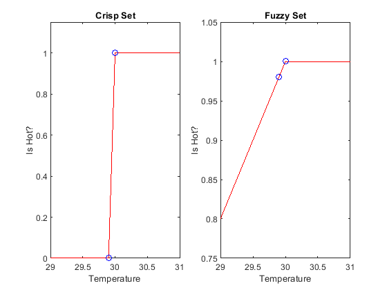
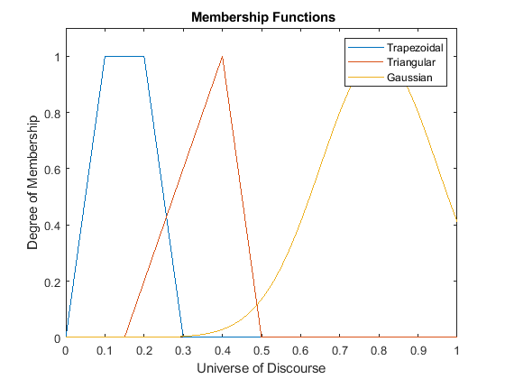
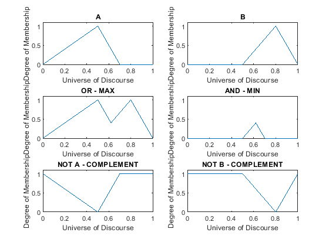
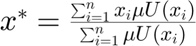
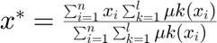
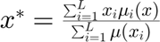
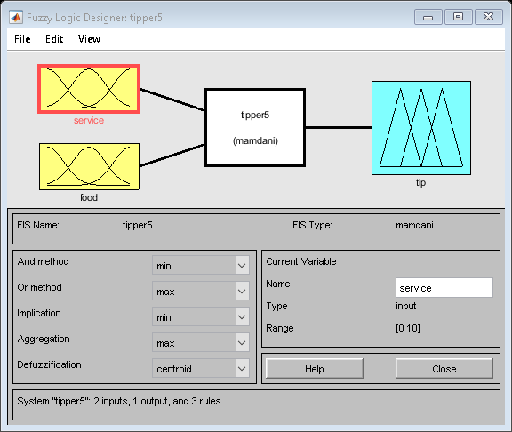

Fuzzy Logic Introduction
Augusto Damasceno
augustodamasceno@protonmail.com
augustodamasceno.org
This lab is part of the project ADlabs.
See https://github.com/augustodamasceno/adlabs/
ADlabs Licenses
All softwares are licensed under the BSD-2-Clause
Images, PDFs or any other types of files that are not software are licensed under a Creative Commons Attribution 4.0 International License.
Contents
Clean
% Removes all variables from the workspace. clear; % Close all figures and close all; % Clear Command Window
Configuration
figureIdx = 1; if ~exist('img', 'dir') mkdir('img') end
Crisp and Fuzzy Sets for a temperature range.
figs(figureIdx) = figure(figureIdx); figureIdx = figureIdx + 1; t = 29:0.1:31; half = floor(length(t)/2); % Classical Logic - Crisp Sets subplot(1, 2, 1); HC = hotCrisp(t); plot(t, HC, 'r'); hold on; plot(t(half), HC(half), 'bo'); plot(t(half+1), HC(half+1), 'bo'); xlim([29 31]); ylim([0 1.15]); title('Crisp Set'); xlabel('Temperature'); ylabel('Is Hot?'); % Fuzzy Logic - Fuzzy Sets subplot(1, 2, 2); HF = hotFuzzy(t); plot(t, HF, 'r'); hold on; plot(t(half), HF(half), 'bo'); plot(t(half+1), HF(half+1), 'bo'); xlim([29 31]); ylim([0.75 1.05]); title('Fuzzy Set'); xlabel('Temperature'); ylabel('Is Hot?'); % Save Figure Image File saveas(figs(figureIdx-1), 'img/IsHot-Crisp-and-Fuzzy-sets.png');
Russell’s Paradox
% Call the set of all sets that are not members of themselves R % If R is a member of itself, then by definition it must not be a member % of itself. Similarly, if R is not a member of itself, then by definition % it must be a member of itself.
Membership Functions
figs(figureIdx) = figure(figureIdx); figureIdx = figureIdx + 1; x = 0:0.01:1; plot(x, trapmf(x, [0, 0.1, 0.2, 0.3]),'DisplayName', 'Trapezoidal'); hold on; plot(x, trimf(x, [0.15, 0.4, 0.5]), 'DisplayName', 'Triangular '); plot(x, gaussmf(x, [0.15, 0.8]),'DisplayName', 'Gaussian'); xlim([0 1]); ylim([0 1.1]); title(' Membership Functions'); xlabel('Universe of Discourse'); ylabel('Degree of Membership'); legend; % Save Figure Image File saveas(figs(figureIdx-1), 'img/Membership-Functions.png');
Definitions
% Support % Crisp subset where the membership function is larger than zero. % Core % Crisp subset where the membership function is 1. % Height % The supremum the membership function. % Normal Fuzzy Set % At least one value where the membership function is 1; % Alpha-cut % The crisp subset where the membership function is equal or less than alpha. % Strict-cut % The crisp subset where the membership function is less than alpha. % Convexity % If all alpha-cuts are convex.
Fuzzy Operators
figs(figureIdx) = figure(figureIdx); figureIdx = figureIdx + 1; x = 0:0.01:1; A = trimf(x, [0, 0.5, 0.7]); B = trimf(x, [0.5, 0.8, 1]); subplot(3, 2, 1); plot(x, A,'DisplayName', 'A'); title('A'); xlabel('Universe of Discourse'); ylabel('Degree of Membership'); xlim([0 1]); ylim([0 1.1]); subplot(3, 2, 2); plot(x, B, 'DisplayName', 'B'); title('B'); xlabel('Universe of Discourse'); ylabel('Degree of Membership'); xlim([0 1]); ylim([0 1.1]); subplot(3, 2, 3); plot(x, max([A; B]),'DisplayName', 'OR - MAX'); title('OR - MAX'); xlabel('Universe of Discourse'); ylabel('Degree of Membership'); xlim([0 1]); ylim([0 1.1]); subplot(3, 2, 4); plot(x, min([A; B]),'DisplayName', 'AND - MIN'); title('AND - MIN'); xlabel('Universe of Discourse'); ylabel('Degree of Membership'); xlim([0 1]); ylim([0 1.1]); subplot(3, 2, 5); plot(x, 1-A,'DisplayName', 'NOT A - COMPLEMENT'); title('NOT A - COMPLEMENT'); xlabel('Universe of Discourse'); ylabel('Degree of Membership'); xlim([0 1]); ylim([0 1.1]); subplot(3, 2, 6); plot(x, 1-B,'DisplayName', 'NOT B - COMPLEMENT'); title('NOT B - COMPLEMENT'); xlabel('Universe of Discourse'); ylabel('Degree of Membership'); xlim([0 1]); ylim([0 1.1]); % Save Figure Image File saveas(figs(figureIdx-1), 'img/fuzzy-operators.png');
Defuzzification - Center of Area or Center of Gravity

Defuzzification - Center of Sums

Defuzzification - Heigth

The Basic Tipping Problem
fuzzyLogicDesigner('tipper.fis'); fis = readfis('tipper'); service = 7; food = 5; fprintf('Service = %d, Food = %d, Then Tip = %.2d\n', ... service, food, evalfis(fis,[service, food]));
Service = 7, Food = 5, Then Tip = 1.78e+01
Functions
function H = hotCrisp(x) H = x; H(H<30) = 0; H(H>=30) = 1; end function H = hotFuzzy(x) H = trapmf(x, [25, 30, 1000, 1000]); end
References
1. MATLAB DOC - https://www.mathworks.com/help/
2. Coppin, B. (2004). Artificial intelligence illuminated. Jones & Bartlett Learning.
3. Oviedo, J., Vandewalle, J., Wertz, V.: Fuzzy Logic, Identification and Predictive Control. Advances in Industrial Control. Springer London (2004)
4. Stanford Encyclopedia of Philosophy. Russell's Paradox. https://plato.stanford.edu/entries/russell-paradox/
5. Build Fuzzy Systems Using Fuzzy Logic Designer - https://www.mathworks.com/help/fuzzy/building-systems-with-fuzzy-logic-toolbox-software.html#brzqs45